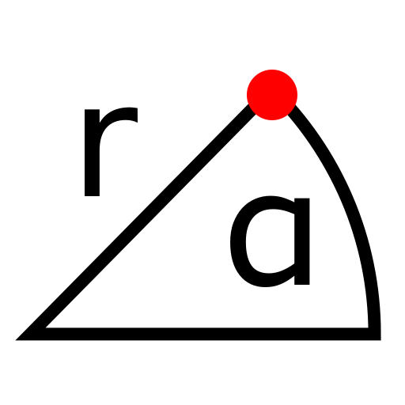

P 極座標
ツールバー/アイコン:


メニュー: S スナップ > P 極座標
ショートカット: S, O
コマンド: snappolar | so
説明:
絶対的か相対的な極座標の入力によりポイントを定義します。
手順:
- 極座標の入力によりポイントを指定しなければならない／したい場合、このツールを始めてください。
-
オプション・ツール・バーに極座標(半径と角度)を入力して、それが絶対座標あるいは相対的なもの(相対的なゼロ点からの座標)である場合は、選択してください。
- OKボタンをクリックするか、あるいは入力を確認し、かつ座標をセットするためにEnterを押します: